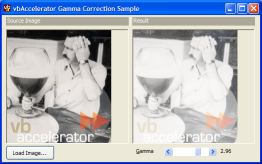
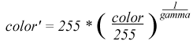

Gamma Correction Sample (57K)
Gamma Correction Sample (57K)
 5 Sep 2003
5 Sep 2003
First Posted

Gamma Correction
How to apply a gamma correction filter to an image
A Gamma Correction filter is primarily used for colour matching purposes on CRT based displays, but it can also be used for creative image processing. This article shows how the gamma filter is calculated and provides an implementation.
About the Gamma Filter
Gamma correction was developed to make it easier to adjust colours displayed on Cathode Ray Tube (CRT) displays. CRT displays produce a light intensity (luminance) proportional to the input voltage raised to a power. Since no two CRTs are exactly alike in their luminance characteristic, a way of adjusting the input image so the displayed colours match a reference is needed. This is done by adjusting the colours to be displayed by a power which is termed gamma.
Since gamma lightens or darkens the colours in an image it can be used for image processing effects as well as the normal colour profile adjustment. Gamma is normally restricted to the range 1/5 to 5, where a value less than 1 lightens the image, a value of 1 leaves the image unaffected and an value greater than 1 darkens the image:
Calculating Gamma
To apply a gamma filter, each colour is factored using the inverse power of the gamma value:
Since the gamma calculation involves powers, and for a given value of gamma and colour the output colour value is constant, it makes sense to pre-calculate the new colour values and store them in an array so the calculation doesn't need to be repeated each time. Then the new value can be looked up simply as the index of the entry in a one-dimensional array:
Private m_fGamma As Double
Private m_red(0 To 255) As Byte
Private m_green(0 To 255) As Byte
Private m_blue(0 To 255) As Byte
Private Sub createGammaTable()
Dim i As Long
Dim lValue As Long
For i = 0 To 255
lValue = (255# * ((i / 255#) ^ (1# / m_fGamma))) + 0.5
If (lValue > 255) Then lValue = 255
m_red(i) = lValue
m_green(i) = lValue
m_blue(i) = lValue
Next i
End Sub
Note that the red, green and blue gamma values are all set to the same amount in this example. A different gamma could be used for each to achieve colourisation effects.
Applying The Filter
Once the gamma arrays have been calculated it is relatively simple to apply them to an image using a DIB Section. For each pixel in the image array, read the red, green and blue values and then replace them with their lookup within the gamma tables:
Dim bDib() As Byte
Dim bDibDst() As Byte
Dim tSA As SAFEARRAY2D
Dim tSADst As SAFEARRAY2D
' Get the bits in the from DIB section:
With tSA
.cbElements = 1
.cDims = 2
.Bounds(0).lLbound = 0
.Bounds(0).cElements = cSrc.Height
.Bounds(1).lLbound = 0
.Bounds(1).cElements = cSrc.BytesPerScanLine
.pvData = cSrc.DIBSectionBitsPtr
End With
CopyMemory ByVal VarPtrArray(bDib()), VarPtr(tSA), 4
' Get the bits in the from DIB section:
With tSADst
.cbElements = 1
.cDims = 2
.Bounds(0).lLbound = 0
.Bounds(0).cElements = cDst.Height
.Bounds(1).lLbound = 0
.Bounds(1).cElements = cDst.BytesPerScanLine()
.pvData = cDst.DIBSectionBitsPtr
End With
CopyMemory ByVal VarPtrArray(bDibDst()), VarPtr(tSADst), 4
Dim x As Long
Dim y As Long
Dim xEnd As Long
Dim yEnd As Long
xEnd = cSrc.BytesPerScanLine() - 3
yEnd = cSrc.Height - 1
For x = 0 To xEnd Step 3
For y = 0 To yEnd
bDibDst(x + 2, y) = m_red(bDib(x + 2, y))
bDibDst(x + 1, y) = m_green(bDib(x + 1, y))
bDibDst(x, y) = m_blue(bDib(x, y))
Next y
Next x
CopyMemory ByVal VarPtrArray(bDibDst), 0&, 4
CopyMemory ByVal VarPtrArray(bDib), 0&, 4
Conclusion
The sample code demonstrates applying gamma to a True Colour DIB Section. This type of code can be used as a simple way to highlight, brighten or darken images.